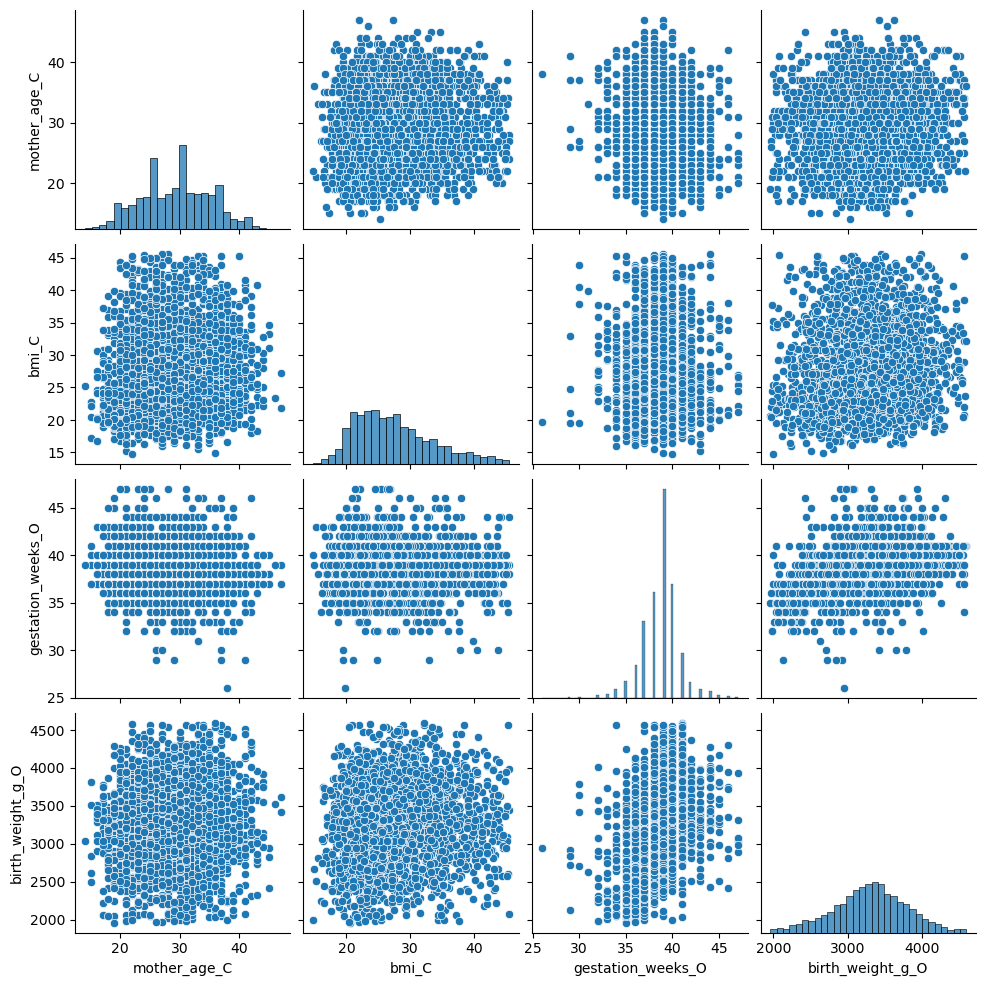
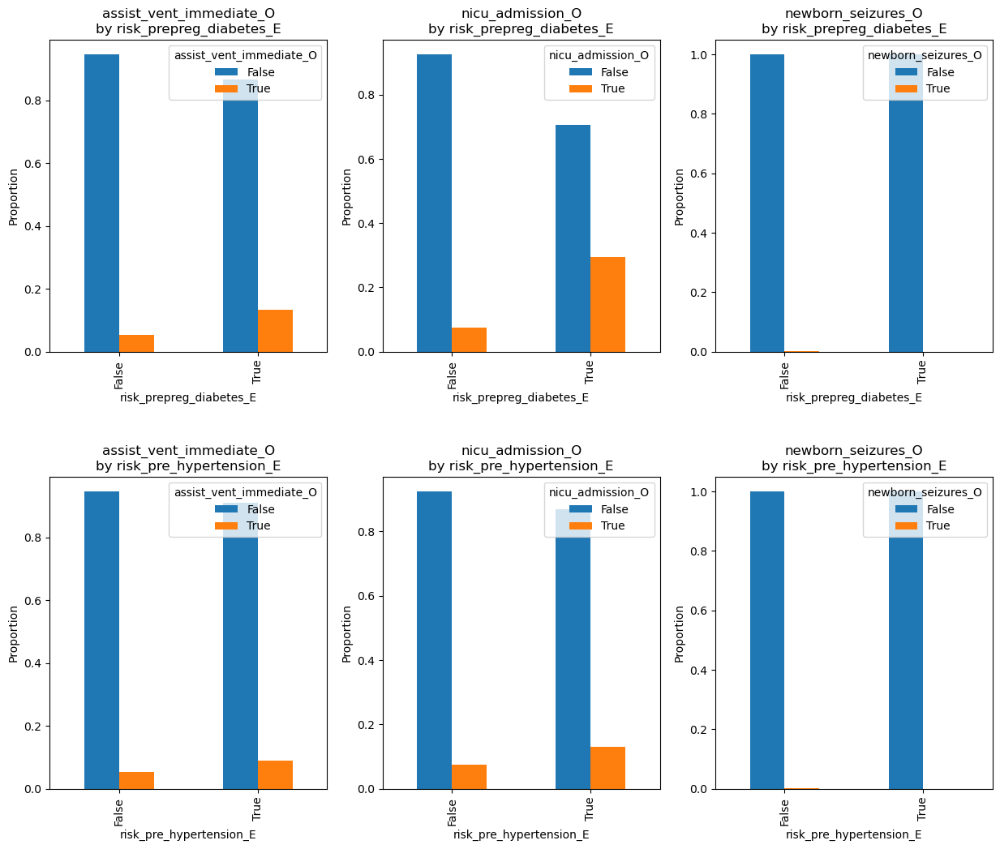
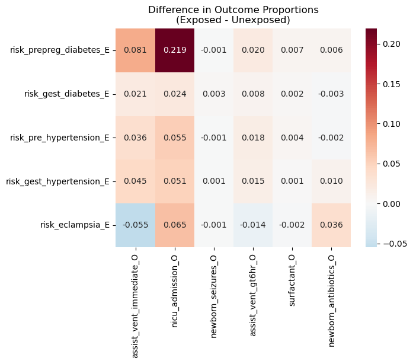
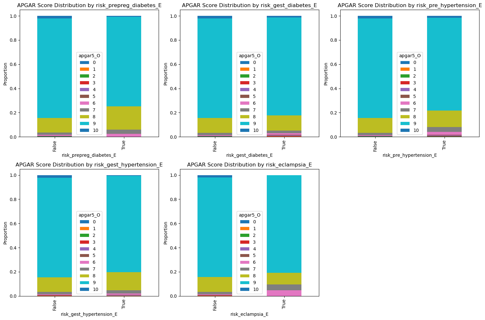
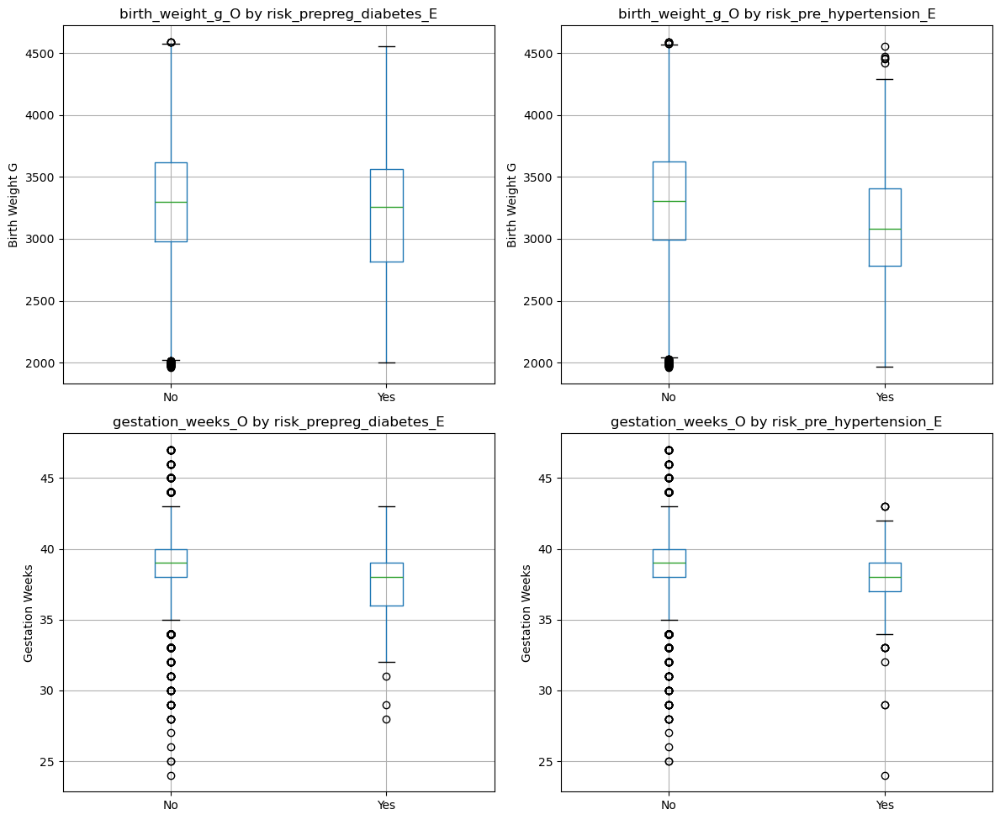

import pandas as pd
import numpy as np
import matplotlib.pyplot as plt
import seaborn as sns
from scipy.stats import pointbiserialrExploratory Data Analysis (EDA): Multivariate
data = pd.read_csv('../data/cleaned/natality_cleaned.csv')
data.head()| bfacil | mager | mrace6 | dmar | meduc | precare | bmi | rf_pdiab | rf_gdiab | rf_phype | ... | sex | combgest | dbwt | ab_aven1 | ab_aven6 | ab_nicu | ab_surf | ab_anti | ab_seiz | no_abnorm | |
|---|---|---|---|---|---|---|---|---|---|---|---|---|---|---|---|---|---|---|---|---|---|
| 0 | Hospital | 26 | White | Unmarried | Some college credit, not a degree | 6 | 24.200001 | False | False | False | ... | F | 39 | 3150 | False | False | False | False | False | False | True |
| 1 | Hospital | 20 | White | Unmarried | Some college credit, not a degree | 1 | 20.400000 | False | False | False | ... | F | 41 | 2466 | False | False | False | False | False | False | True |
| 2 | Hospital | 29 | Asian | Married | Doctorate | 2 | 19.500000 | False | False | False | ... | F | 39 | 2620 | False | False | False | False | False | False | True |
| 3 | Hospital | 18 | White | Married | 9th-12th no diploma | 4 | 33.400002 | False | False | False | ... | M | 40 | 3360 | False | False | False | False | False | False | True |
| 4 | Other | 25 | White | Married | Some college credit, not a degree | 4 | 23.000000 | False | False | False | ... | M | 39 | 2930 | False | False | False | False | False | False | True |
5 rows × 43 columns
Data Overview
print(f"Number of rows: {len(data)}")
print(f"\nData types: {data.dtypes}")
print(f"\nSummary stats: {data.describe()}")Number of rows: 10000
Data types: bfacil object
mager int64
mrace6 object
dmar object
meduc object
precare int64
bmi float64
rf_pdiab bool
rf_gdiab bool
rf_phype bool
rf_ghype bool
rf_ehype bool
no_risks bool
ip_gon bool
ip_syph bool
ip_chlam bool
ip_hepb bool
ip_hepc bool
no_infec bool
ld_indl bool
ld_augm bool
ld_ster bool
ld_antb bool
ld_chor bool
ld_anes bool
me_rout object
mm_mtr bool
mm_plac bool
mm_rupt bool
mm_uhyst bool
mm_aicu bool
apgar5 int64
dplural int64
sex object
combgest int64
dbwt int64
ab_aven1 bool
ab_aven6 bool
ab_nicu bool
ab_surf bool
ab_anti bool
ab_seiz bool
no_abnorm bool
dtype: object
Summary stats: mager precare bmi apgar5 dplural \
count 10000.000000 10000.000000 10000.000000 10000.00000 10000.000000
mean 29.443700 3.018100 27.439310 8.78930 1.024200
std 5.790629 1.534017 6.170185 0.72647 0.154327
min 13.000000 0.000000 13.600000 0.00000 1.000000
25% 25.000000 2.000000 22.700001 9.00000 1.000000
50% 30.000000 3.000000 26.400000 9.00000 1.000000
75% 34.000000 3.000000 31.200001 9.00000 1.000000
max 47.000000 10.000000 45.599998 10.00000 3.000000
combgest dbwt
count 10000.00000 10000.000000
mean 38.73120 3288.769000
std 2.04479 480.981607
min 24.00000 1960.000000
25% 38.00000 2980.000000
50% 39.00000 3300.000000
75% 40.00000 3620.000000
max 47.00000 4593.000000 Inspect Categorical Variables
# rename w category tags:
# _E = exposure, _O = outcome, _C = covariate, _X = other
rename_map = {
"bfacil": "birth_place_C",
"mager": "mother_age_C",
"mrace6": "mother_race_C",
"dmar": "marital_status_C",
"meduc": "mother_education_C",
"precare": "prenatal_care_month_C",
"bmi": "bmi_C",
"rf_pdiab": "risk_prepreg_diabetes_E",
"rf_gdiab": "risk_gest_diabetes_E",
"rf_phype": "risk_pre_hypertension_E",
"rf_ghype": "risk_gest_hypertension_E",
"rf_ehype": "risk_eclampsia_E",
"no_risks": "no_risks_reported_X",
"ip_gon": "infection_gonorrhea_E",
"ip_syph": "infection_syphilis_E",
"ip_chlam": "infection_chlamydia_E",
"ip_hepb": "infection_hepb_E",
"ip_hepc": "infection_hepc_E",
"no_infec": "no_infections_reported_X",
"ld_indl": "labor_induction_X",
"ld_augm": "labor_augmentation_X",
"ld_ster": "steroids_X",
"ld_antb": "antibiotics_X",
"ld_chor": "chorioamnionitis_X",
"ld_anes": "anesthesia_X",
"me_rout": "delivery_method_O",
"mm_mtr": "maternal_transfusion_X",
"mm_plac": "perineal_laceration_X",
"mm_rupt": "uterine_rupture_X",
"mm_uhyst": "unplanned_hysterectomy_X",
"mm_aicu": "admit_icu_X",
"apgar5": "apgar5_O",
"dplural": "multiples_count_C",
"sex": "infant_sex_C",
"combgest": "gestation_weeks_O",
"dbwt": "birth_weight_g_O",
"ab_aven1": "assist_vent_immediate_O",
"ab_aven6": "assist_vent_gt6hr_O",
"ab_nicu": "nicu_admission_O",
"ab_surf": "surfactant_O",
"ab_anti": "newborn_antibiotics_O",
"ab_seiz": "newborn_seizures_O",
"no_abnorm": "no_abnormal_conditions_X"
}
data = data.rename(columns=rename_map)
print("Columns now:", list(data.columns))Columns now: ['birth_place_C', 'mother_age_C', 'mother_race_C', 'marital_status_C', 'mother_education_C', 'prenatal_care_month_C', 'bmi_C', 'risk_prepreg_diabetes_E', 'risk_gest_diabetes_E', 'risk_pre_hypertension_E', 'risk_gest_hypertension_E', 'risk_eclampsia_E', 'no_risks_reported_X', 'infection_gonorrhea_E', 'infection_syphilis_E', 'infection_chlamydia_E', 'infection_hepb_E', 'infection_hepc_E', 'no_infections_reported_X', 'labor_induction_X', 'labor_augmentation_X', 'steroids_X', 'antibiotics_X', 'chorioamnionitis_X', 'anesthesia_X', 'delivery_method_O', 'maternal_transfusion_X', 'perineal_laceration_X', 'uterine_rupture_X', 'unplanned_hysterectomy_X', 'admit_icu_X', 'apgar5_O', 'multiples_count_C', 'infant_sex_C', 'gestation_weeks_O', 'birth_weight_g_O', 'assist_vent_immediate_O', 'assist_vent_gt6hr_O', 'nicu_admission_O', 'surfactant_O', 'newborn_antibiotics_O', 'newborn_seizures_O', 'no_abnormal_conditions_X']# show numpy arrays of uniques
# make dplural, precare columns categorical
data['multiples_count_C'] = data['multiples_count_C'].astype('category')
data['prenatal_care_month_C'] = data['prenatal_care_month_C'].astype('category')
data['apgar5_O'] = data['apgar5_O'].astype('category')
data.select_dtypes(include=['object', 'category']).apply(lambda x: x.unique())birth_place_C [Hospital, Other, Home (intended), Freestandin...
mother_race_C [White, Asian, Black, More than one race, Amer...
marital_status_C [Unmarried, Married]
mother_education_C [Some college credit, not a degree, Doctorate,...
prenatal_care_month_C [6, 1, 2, 4, 9, ..., 0, 7, 5, 8, 10]
Length: 1...
delivery_method_O [Spontaneous, Cesarean, Vacuum, Forceps]
apgar5_O [9, 8, 6, 10, 7, ..., 1, 2, 5, 3, 0]
Length: 1...
multiples_count_C [1, 2, 3]
Categories (3, int64): [1, 2, 3]
infant_sex_C [F, M]
dtype: objectNumerical Variables
num_df = data.select_dtypes(include=['int64', 'float64'])
num_df.head()| mother_age_C | bmi_C | gestation_weeks_O | birth_weight_g_O | |
|---|---|---|---|---|
| 0 | 26 | 24.200001 | 39 | 3150 |
| 1 | 20 | 20.400000 | 41 | 2466 |
| 2 | 29 | 19.500000 | 39 | 2620 |
| 3 | 18 | 33.400002 | 40 | 3360 |
| 4 | 25 | 23.000000 | 39 | 2930 |
Pairplot
# pairplot of sample
pairplot = sns.pairplot(num_df.sample(n=3000, random_state=5100))
plt.savefig("../plots/eda/multivar/pairplot_natality_numeric_sample.png", dpi=300)
Proportions/Frequencies
# For binary outcomes
for outcome in ['assist_vent_immediate_O', 'nicu_admission_O', 'newborn_seizures_O']:
prop_table = pd.crosstab(
data[['risk_prepreg_diabetes_E', 'risk_pre_hypertension_E']].any(axis=1),
data[outcome],
normalize='index'
)
print(f"\n{outcome}:")
print(prop_table)
# Visualize
fig, axes = plt.subplots(2, 3, figsize=(15, 12))
plt.subplots_adjust(hspace=0.4)
for idx, outcome in enumerate(['assist_vent_immediate_O', 'nicu_admission_O', 'newborn_seizures_O']):
for jdx, exposure in enumerate(['risk_prepreg_diabetes_E', 'risk_pre_hypertension_E']):
ax = axes[jdx, idx]
pd.crosstab(data[exposure], data[outcome], normalize='index').plot(
kind='bar', ax=ax, legend=True
)
ax.set_title(f'{outcome}\nby {exposure}')
ax.set_ylabel('Proportion')
plt.savefig("../plots/eda/multivar/crosstab_natality_exposures_outcomes.png", dpi=300)
assist_vent_immediate_O:
assist_vent_immediate_O False True
row_0
False 0.947066 0.052934
True 0.902844 0.097156
nicu_admission_O:
nicu_admission_O False True
row_0
False 0.926289 0.073711
True 0.836493 0.163507
newborn_seizures_O:
newborn_seizures_O False True
row_0
False 0.999374 0.000626
True 1.000000 0.000000
Heatmap
exposure_vars = ['risk_prepreg_diabetes_E', 'risk_gest_diabetes_E', 'risk_pre_hypertension_E', 'risk_gest_hypertension_E', 'risk_eclampsia_E']
# Calculate raw proportion differences (no testing yet)
def prop_difference(data, exposure, outcome, outcome_value=True):
# Calculate difference in outcome proportion between exposed/unexposed
exposed = data[data[exposure] == True][outcome].mean()
unexposed = data[data[exposure] == False][outcome].mean()
return exposed - unexposed
# heatmap of proportion differences
categorical_outcomes = ['assist_vent_immediate_O', 'nicu_admission_O',
'newborn_seizures_O', 'assist_vent_gt6hr_O', 'surfactant_O', 'newborn_antibiotics_O'] # surfactant_O, newborn_antibiotics_O
prop_diff_matrix = pd.DataFrame(index=exposure_vars,
columns=categorical_outcomes)
for exposure in exposure_vars:
for outcome in categorical_outcomes:
diff = prop_difference(data, exposure, outcome)
prop_diff_matrix.loc[exposure, outcome] = diff
sns.heatmap(prop_diff_matrix.astype(float), annot=True, cmap='RdBu_r',
center=0, fmt='.3f')
plt.title('Difference in Outcome Proportions\n(Exposed - Unexposed)')
plt.savefig("../plots/eda/multivar/prop_diff_heatmap_natality.png", dpi=300)
APGAR score distribution
fig, axes = plt.subplots(2, 3, figsize=(15, 10))
axes = axes.flatten() # flatten, use single index for iteration
for i, exposure in enumerate(exposure_vars):
ax = axes[i]
data.groupby(exposure)['apgar5_O'].value_counts(normalize=True).unstack().plot(
kind='bar', stacked=True, ax=ax
)
ax.set_title(f'APGAR Score Distribution by {exposure}')
ax.set_ylabel('Proportion')
# remove unused subplot
axes[5].axis('off')
plt.tight_layout()
plt.savefig("../plots/eda/multivar/apgar_by_exposures_natality.png", dpi=300)
Boxplots of Continuous Outcomes by Condition/Exposure
fig, axes = plt.subplots(2, 2, figsize=(12, 10))
plt.subplots_adjust(hspace=0.35, wspace=0.3)
continuous_outcomes = ['birth_weight_g_O', 'gestation_weeks_O']
main_exposures = ['risk_prepreg_diabetes_E', 'risk_pre_hypertension_E']
for idx, outcome in enumerate(continuous_outcomes):
for jdx, exposure in enumerate(main_exposures):
ax = axes[idx, jdx]
data.boxplot(column=outcome, by=exposure, ax=ax)
ax.set_title(f'{outcome} by {exposure}')
ax.set_xlabel('')
ax.set_ylabel(outcome.replace('_O', '').replace('_', ' ').title())
plt.sca(ax)
plt.xticks([1, 2], ['No', 'Yes'])
plt.suptitle('') # remove automatic suptitle
plt.tight_layout()
plt.savefig("../plots/eda/multivar/boxplots_natality_exposures_outcomes.png", dpi=300)
REMOVE: Violin/Box Plots
# violin / box plots to explore exposures -> outcomes with optional covariates
import matplotlib.pyplot as plt
import seaborn as sns
# quick lists
exposures = [
"risk_gest_diabetes_E",
"risk_gest_hypertension_E",
"risk_eclampsia_E"
]
outcomes = [
"gestation_weeks_O",
"birth_weight_g_O",
"apgar5_O",
"nicu_admission_O"
]
covariates = [
"mother_age_C",
"mother_race_C",
"bmi_C"
]
def plot_exposure_vs_outcome(df, exposure, outcome, covariate = None, sample_n = 4000):
# copy & drop na
sub = df[[exposure, outcome] + ([covariate] if covariate else [])].dropna()
if sub.empty:
print(f"No data for {exposure} x {outcome} (after dropna).")
return
# convert boolean exposures to int for grouping
if pd.api.types.is_bool_dtype(sub[exposure]) or sub[exposure].dtype.name == 'boolean':
sub[exposure] = sub[exposure].astype(int).astype(str) # 0/1 categories
else:
sub[exposure] = sub[exposure].astype(str)
# handle covariate: if numeric, bin into quartiles; if too many categories, ignore hue
hue = None
if covariate and covariate in sub.columns:
if pd.api.types.is_numeric_dtype(sub[covariate]):
try:
sub[covariate + "_bin"] = pd.qcut(sub[covariate], q=4, duplicates='drop').astype(str)
hue = covariate + "_bin"
except Exception:
hue = None
else:
if sub[covariate].nunique() <= 8:
hue = covariate
else:
hue = None
# for speed
if len(sub) > sample_n:
sub = sub.sample(sample_n, random_state = 5100)
# plot
plt.figure(figsize = (8,6))
sns.violinplot(x = exposure, y = outcome, hue = hue, data = sub, inner = 'quartile', cut = 0)
title = f"{outcome} by {exposure}" + (f" (hue={hue})" if hue else "")
plt.title(title)
# save
# plt_filename = f"../plots/eda/multivar/plot_{exposure}_vs_{outcome}" + (f"_by_{hue}" if hue else "") + ".png"
# plt.savefig(plt_filename)
# plt.show()
# generate a small grid of plots: each exposure x a couple of outcomes, with two covariates shown
# plot_covariates = ["infant_sex_C", "mother_race_C"]
for exp in exposures:
for out in outcomes:
# first without covariate
plot_exposure_vs_outcome(data, exp, out, covariate=None)
# then with covariates (if present)
for cov in covariates:
plot_exposure_vs_outcome(data, exp, out, covariate=cov)bool_cols = data.select_dtypes(include=['bool']).columns
num_cols = data.select_dtypes(include=['int64','float64']).columns
pb = pd.DataFrame(index=bool_cols, columns=num_cols, dtype=float)
for b in bool_cols:
for ncol in num_cols:
try:
r, p = pointbiserialr(data[b].astype(int), data[ncol].fillna(data[ncol].median()))
except Exception:
r = np.nan
pb.loc[b, ncol] = r
plt.figure(figsize = (10,6))
sns.heatmap(pb.astype(float), center=0, cmap='coolwarm')
plt.title("Point-biserial correlation (bool vs numeric)")
# plt.show()